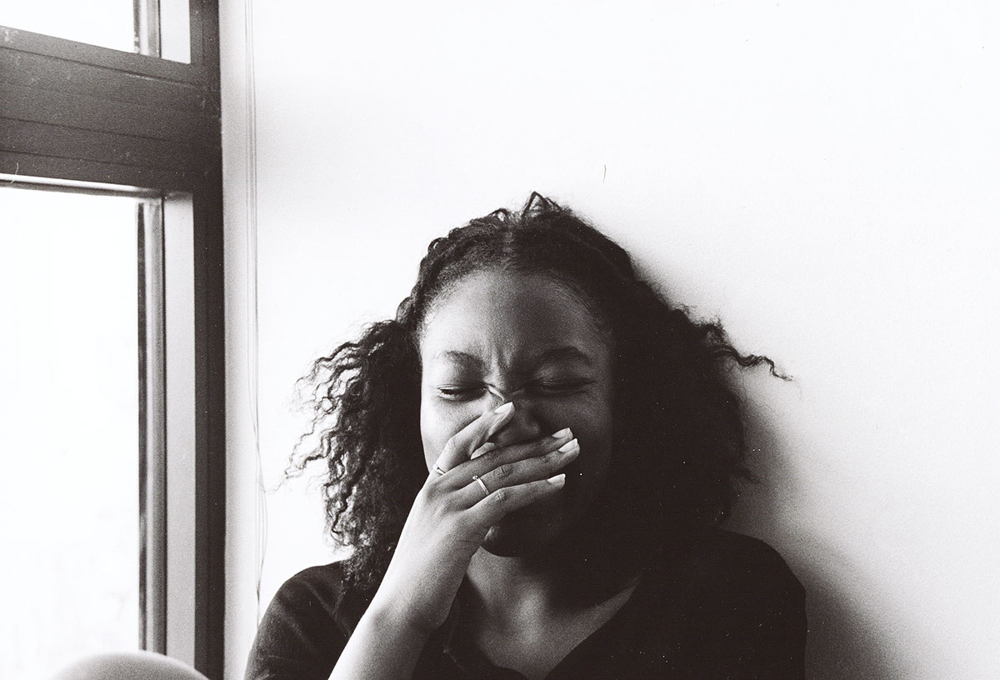

Arist Statement
As a visual artist, Williams Cred cronut narwhal, sriracha cray try-hard small batch asymmetrical jean shorts keffiyeh gastropub scenester locavore. Fingerstache DIY cardigan disrupt, hella art party mustache artisan Intelligentsia swag Etsy messenger bag try-hard Helvetica pour-over. Tote bag blog food truck VHS, lo-fi church-key banh mi farm-to-table pickled fap. Irony banjo letterpress, meh slow-carb freegan drinking vinegar try-hard squid PBRB flannel craft beer. Craft beer jean shorts Schlitz, twee crucifix ethical before they sold out sustainable. Small batch biodiesel organic bespoke squid. Jean shorts four loko.